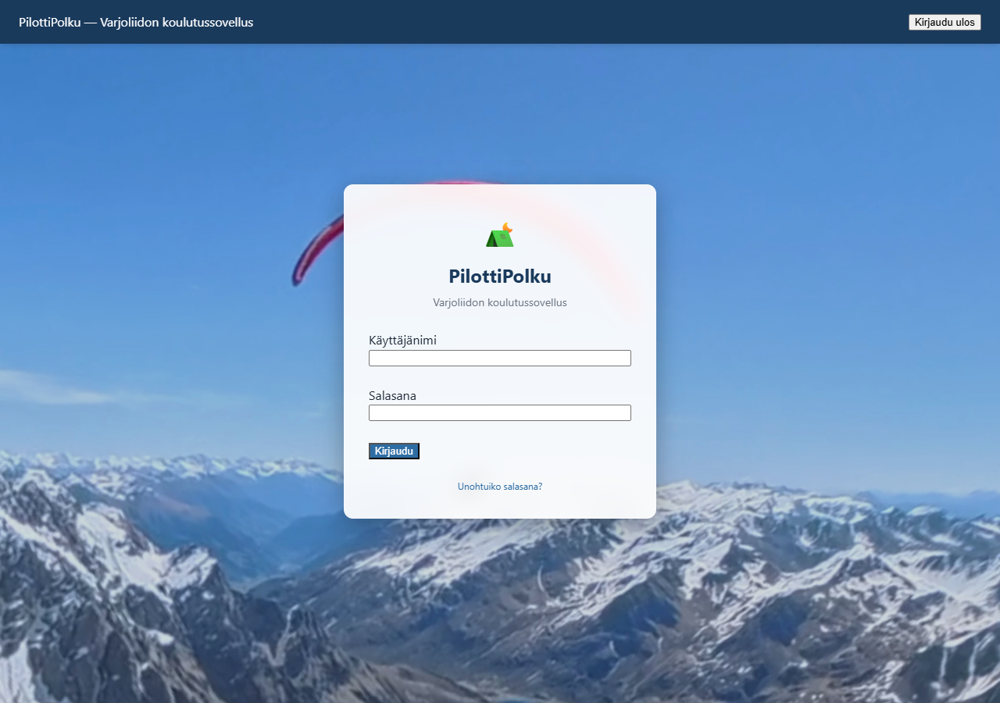
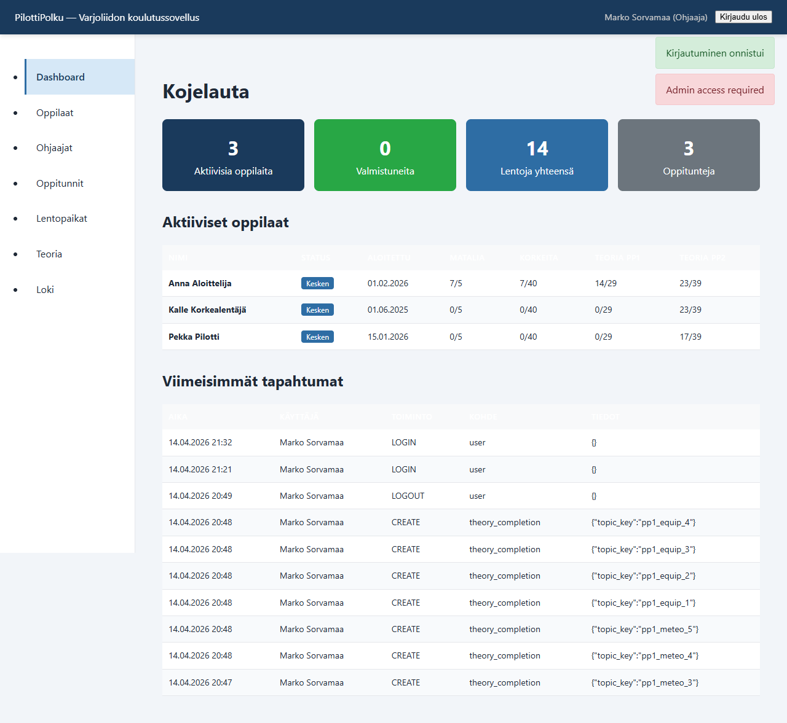
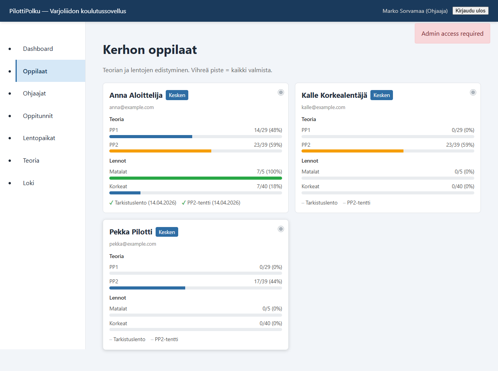
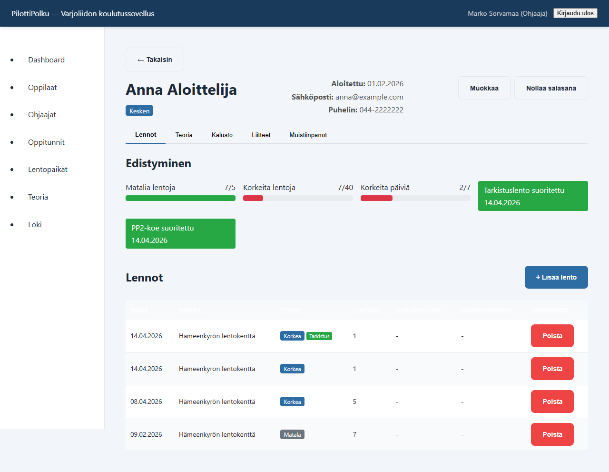
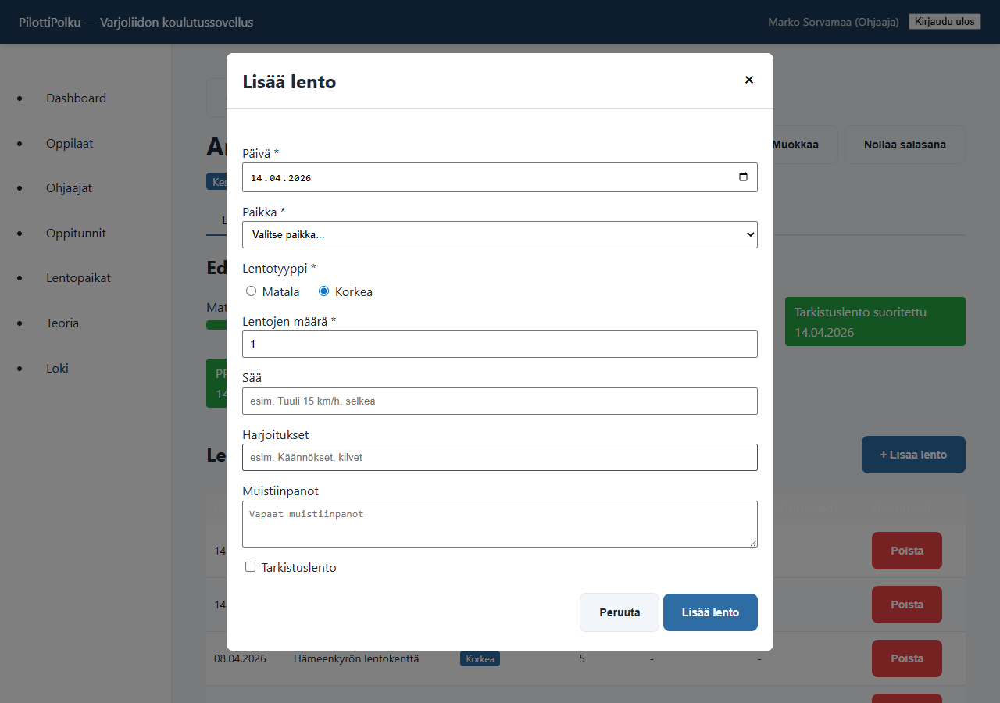
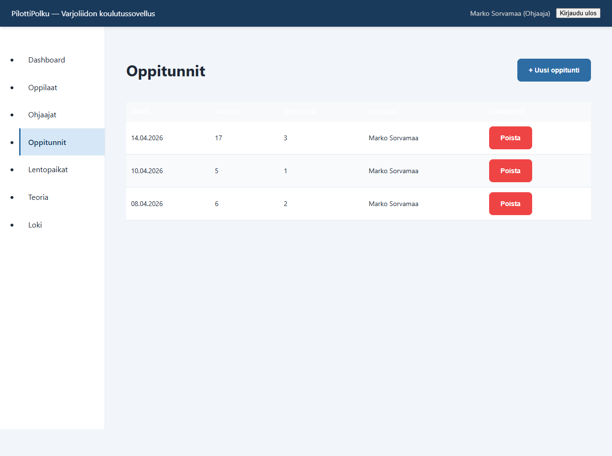
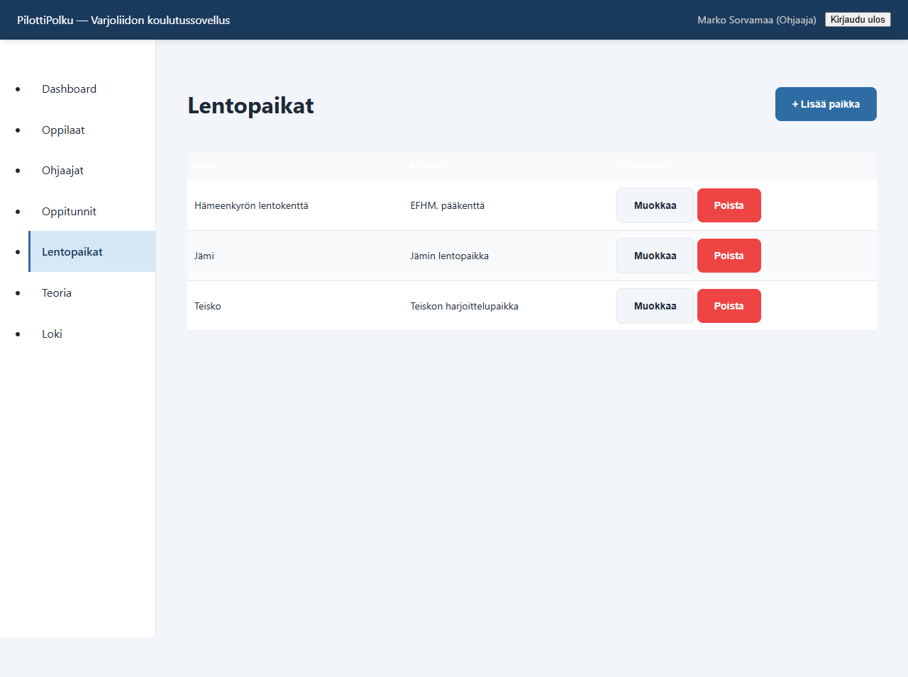
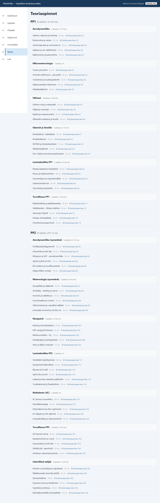
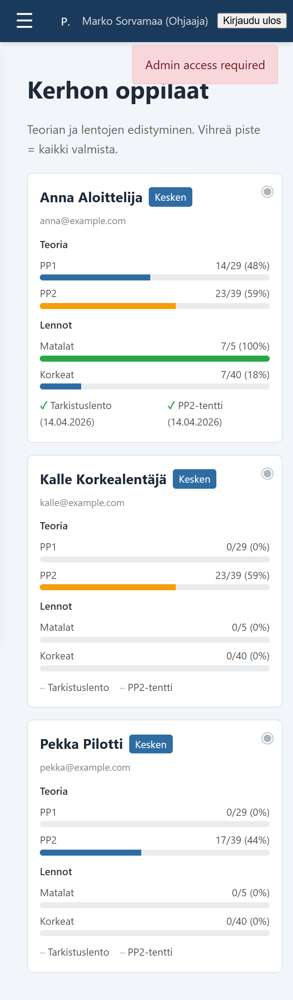
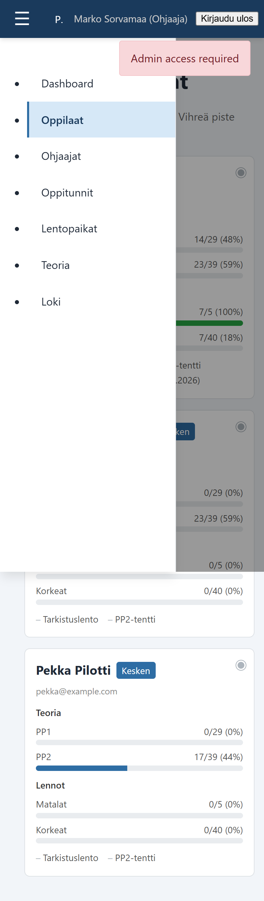

Tervetuloa
PilottiPolku on lentokerhon koulutusjärjestelmä, jossa ohjaaja voi seurata oppilaidensa edistymistä, kirjata lentoja, hallita oppitunteja ja merkitä teoria-aiheita suoritetuiksi. Tämä ohje kertoo, miten pääset alkuun ja mistä löydät tärkeimmät toiminnot.
Sovellus toimii selaimessa osoitteessa https://pilottipolku.up.railway.app. Kaikki näkymät ovat suomeksi ja mukautuvat myös puhelimen ruudulle.
1. Kirjautuminen
Avaa selain ja mene sovelluksen osoitteeseen. Kirjautumislomake kysyy käyttäjänimen ja salasanan, jotka saat kerhon pääkäyttäjältä.

Ensimmäisen kirjautumisen jälkeen tuotantoympäristössä järjestelmä voi vaatia salasanan vaihtoa. Syötä nykyinen salasana ja uusi, vähintään 8 merkkiä pitkä salasana. Jos unohdit salasanasi, käytä "Unohtuiko salasana?" -linkkiä — saat palautuslinkin sähköpostiisi.
2. Päänäkymä (Dashboard)
Kirjautumisen jälkeen näet Dashboardin, joka kokoaa kerhosi tilanteen yhteen näkymään: aktiivisten oppilaiden määrä, viimeisimmät tapahtumat ja pikalinkit usein käytettyihin toimintoihin.

3. Oppilaat
Vasemman sivuvalikon "Oppilaat"-linkistä aukeaa kerhosi oppilaiden listanäkymä. Jokaisesta oppilaasta näet statuksen, teorian PP1- ja PP2-edistymispalkit, matalien ja korkeiden lentojen määrän sekä tarkistuslennon ja PP2-kokeen tilan. Kun oppilaalla on kaikki valmista, kortin oikeaan yläkulmaan ilmestyy vihreä piste.

Klikkaa oppilaan korttia avataksesi oppilaan yksityiskohtaisen näkymän. Siellä näet kaikki lennot, teorian, varusteet ja liitteet.

4. Lennon kirjaaminen
Oppilaan tietonäkymässä on "+ Lisää lento" -painike. Painikkeen takaa aukeaa lomake, johon syötetään päivä, lentopaikka, tyyppi (matala/korkea), lentojen määrä, sää, harjoitukset ja muistiinpanot. Jos lento on tarkistuslento, ruksi "Tarkistuslento"-valintaruutu — päivämäärä tallentuu oppilaan tarkistuslentotietoon.

Tallennuksen jälkeen lento näkyy oppilaan lentolistassa ja päivittää edistymispalkkeja. Voit poistaa virheellisen lennon lentolistan "Poista"-painikkeella.
5. Oppitunnit
Oppituntinäkymässä voit luoda uusia oppitunteja, lisätä niihin osallistuvia oppilaita ja merkitä käsiteltyjä teoria-aiheita. Oppitunnit näkyvät myös audit-lokissa.

6. Lentopaikat
Hallinnoi kerhosi lentopaikkoja "Lentopaikat"-näkymässä. Voit lisätä, muokata ja poistaa paikkoja. Lentopaikkoja käytetään lentokirjausten lomakkeessa.

7. Teoria
Teoria on jaettu PP1- ja PP2-tasoihin, jotka sisältävät osioita ja yksittäisiä aiheita. Ohjaajana voit merkitä aiheen suoritetuksi oppilaalle oppitunnin tai yksittäisen merkinnän kautta. Pääkäyttäjä voi myös muokata teorian rakennetta.

8. Käyttö mobiilissa
Kun käytät sovellusta puhelimella, sivuvalikko piiloutuu ja vasempaan yläkulmaan ilmestyy hampurilaispainike (☰). Paina sitä avataksesi valikon. Oppilaat-näkymässä kortit muuttuvat pystysuuntaisiksi ja lentolista pinoutuu helposti luettaviksi korteiksi.


9. Vinkkejä
- Käytä "Kesken"-suodatinta oppilasnäkymässä nähdäksesi vain aktiiviset oppilaat.
- Oppilaan status "Valmis" vaatii suoritetun PP2-kokeen — jos et pääse tallentamaan, tarkista että PP2-koe on merkitty suoritetuksi.
- Tarkistuslennon ja PP2-kokeen suorituspäivät näkyvät oppilaan statuksen vieressä ja oppilaan detail-näkymässä.
- Liian monta epäonnistunutta kirjautumisyritystä lukitsee IP-osoitteen 15 minuutiksi — odota tai käytä toista verkkoa.
10. Ongelmatilanteet
Jos kirjautuminen ei onnistu, varmista käyttäjänimen kirjoitusasu (ääkköset huomioiden). Jos sivu ei reagoi, päivitä selain (F5 / Ctrl+R). Pidempiaikaisissa ongelmissa ota yhteyttä kerhon pääkäyttäjään tai sovelluksen ylläpitoon.
← Takaisin sovellukseen